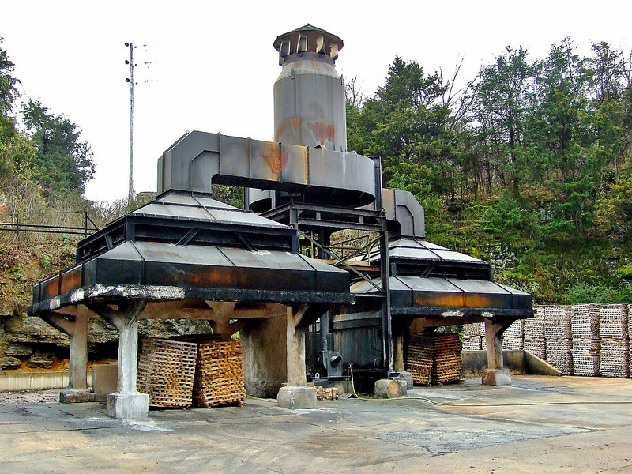

I am a slide 1
I am a slide 1

I am a slide ２
 I am a slide ３
I am a slide ３
 I am a slide ４
I am a slide ４

徳島の風土と日本酒
- 県土で生まれた味わい
- 徳島の風土と蔵元それぞれの持つ伝統、日々の営みが響きあい、大人が楽しめる豊かな
味が作り出されています。このサイトでは、徳島での酒蔵の活動と想いを紹介します。 - 豊かな自然に育まれた「お米」
- 徳島県の醸造に使われるお米は、「山田錦」や「美山錦」などの全国的にも有名な酒造
好適米をはじめ、その地域独自の酒米など多種多様なものがあります。 - 「清流」の収束する吉野川
- そして、お米同様に重要な「水」にも恵まれています。徳島県では、剣山山系や讃岐山
脈からの伏流水が豊富な水源となり、酒造りに好んで使われています。そのため、吉野
川などの河川沿いに多くの蔵元が存在しております。 - 判断と、試行錯誤の日々
- 一見、このように生産資源に恵まれた徳島県ですが、自然すべてが味方というわけでは
ありません。醸造には通常、十分な寒さが必要ですが、徳島県は温暖な地域なので温度
管理に徹底した醸造が行われています。そこには日々、上質な徳島酒を生み出すために
気候環境と戦う職人たちの試行錯誤重ねられています。